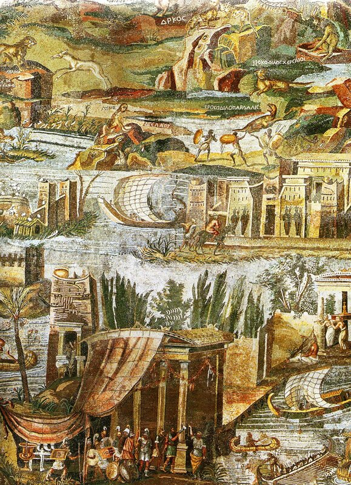
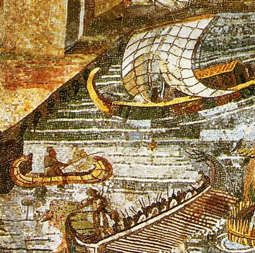

Гемиолия
Трусость - это некая душевная слабость, выражающаяся в неспособности противостоять страху, а трус вот какой человек. В море он принимает утесы за пиратские корабли. А едва начинают подыматься волны, спрашивает, нет ли среди плывущих непосвященного в мистерии. И подымая затем голову к кормчему, выспрашивает у того, держит ли он правильный курс в открытом море и что думает о погоде; а своему соседу говорит, что видел зловещий сон. Затем снимает свой хитон, отдает рабу и умоляет высадить его на берег.
Теофраст Характеры (Пер. Стратановского Г.А)
Вроде бы надо закругляться с рассказами об Античном стиле гребли, и так уже глава становится необъятной, но классическая тема так затягивает, что отступиться от нее нет сил. Поэтому еще один небольшой пост.

В качестве эпиграфа к нему мы взяли на этот раз отрывок их Теофраста (ок. 370 – между 288 и 285 до н. э.,). Причина в том, что пиратский корабль, о котором идет речь в переводе, в подлиннике обозначен термином ἡμιολία (hemiolia, гемиолия), о котором мы рассуждали на протяжении последних наших встреч. Это первое упоминание гемиолии в дошедших до нас источниках. Таким образом, гемиолия в те далекие времена так же ассоциировалась с пиратским судном, как в наше время «Веселый Роджер». Этот корабль должен был иметь высокую скорость, стремительность и маневренность. Но такими характеристиками были наделены и корабль Одиссея, и появившиеся несколькими веками позже пентеконтеры. Чем же выделялся этот тип кораблей из общего ряда ему подобных, что он стал так привлекателен для пиратов?
Большинство ученых сходится во мнении, что гемиолия пришла из Карии, расположенной на юго-западном побережье Малой Азии. Карийцы неоднократно отмечались в истории как ловкие пираты.
Конструктивно гемиолия выделялась из стандартных судов наличием дополнительного ряда весел, который, однако, продолжался не на всю длину корабля, а располагался только в наиболее широкой его части. Торр (Ancient ships,1895, p.15) считал, что гребли в этом ряду не штатные гребцы (προσκώπους) а «пассажиры» (περίνεως), люди, не входящие в состав экипажа. Где располагался этот дополнительный «полуряд» установить не удалось. Предлагались варианты с расположением его как на верхней палубе, так и в трюме.
Споры относительно конструкции гемиолии стали особенно горячими в последнее время. В позапрошлом веке законодатель и авторитет в области морской лексики Огюстен Жаль был как всегда язвителен и категоричен. Он располагал примерно тем же набором первоисточников, что и мы сегодня, исключая может быть некоторых сведений и папирусов, которые не вносят ничего принципиально нового, но трактовка его была вполне определенна: он исключал всякие варианты, описывающие гемиолию как судно «в полтора раза большее, чем обычный корабль». Вопрос его был неотражаем: quel navire? – какой корабль?! Он склонен был считать, как и сейчас считают многие исследователи, что «половина его длины была без весел, чтобы оставить свободное пространство для боя».
Эту точку зрения особенно последовательно отстаивает L. Casson. В своей книге Ships and seamanship in the ancient world (1995) он так описывает одну из морских сцен, изображенную на греческих вазах. На первой вазе пиратское судно преследует свою жертву. Дует хороший ветер. Шкипер купеческого судна, не подозревающий об опасности, взял паруса на гитовы, значительно снизив площадь парусности. Пират идет на всех парусах, используя каждую их пядь для повышения скорости, и одновременно ставит всех гребцов на весла. Вторая сцена показывает ситуацию перед боем: пират готовится убрать парус и рубить мачту, необходимые для этого снасти разобраны, гребцы верхнего яруса, находящиеся к корме от мачты, покинули свои места, закрепив весла, освободив таким образом место на палубе для подготовки атаки и увеличив количество бойцов, готовых принять в ней участие.
Но не только пираты-карийцы использовали этот тип корабля. Широко они применялись и Александром Македонским в его индийском походе, в частности в последней великой битве знаменитого полководца при Гидаспе. Об этом подробно пишет Арриан в своем Anabasis Alexandri (Поход Александра): «Александру приготовили на берегах Гидаспа много тридцативесельных судов, гемиол, много судов, удобных для перевозки лошадей и для переправы войска по реке, и он решил плыть вниз по Гидаспу до Великого моря» (6.1.1.). И при плавании по Инду также использовались гемиолии: «Он дал Леоннату с тысячу всадников и около 800 гоплитов и легковооруженных и велел ему идти по острову, где лежат Паталы, в направлении, параллельном флоту; сам же, взяв самые быстроходные суда, гемиолы, все тридцативесельные суда и бывшие у него керкуры, стал спускаться по правому рукаву реки.» (6.18.3.)
Как были размещены гребцы на гемиолиях, было ли на каждом весле по одному гребцу, или частью из них гребли по двое – спор об этом продолжается. Мы не станем углубляться в его детали, так как это уведет нас в сторону. Полюбуемся только изображением младшей (но более мощной) сестры нашего корабля, тригемиолии, на прекрасной Нильской мозаике из Палестрины (I в. до н.э.)
